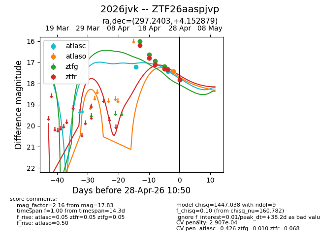
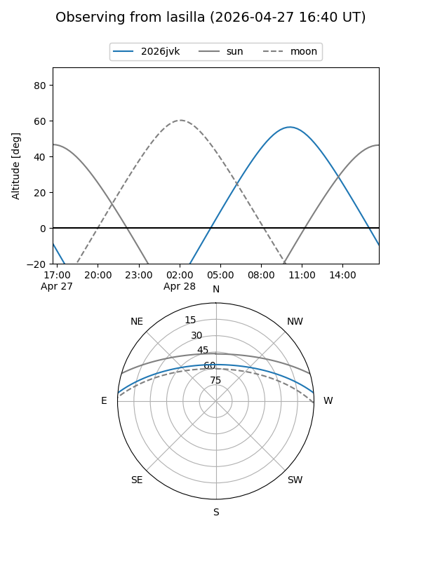
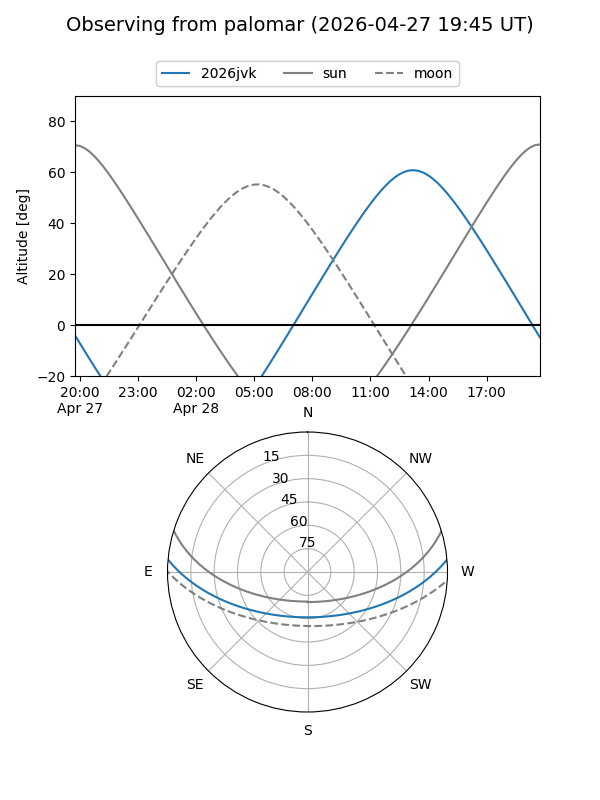
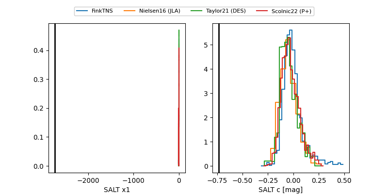

2026jvk
Target 2026jvk at 2026-04-28 10:52
Aliases and brokers:
FINK: link
Lasair: link
ALeRCE: link
TNS: link
YSE: link
alt names
ZTF26aaspjvp (ztf,fink_ztf)
2026jvk (tns,yse)
Coordinates:
equatorial (ra, dec) = 297.2403,+4.15288
equatorial (HMS+DMS) = 19:48:57.67,+04:09:10.36
galactic (l, b) = (43.3370,-10.80347)
Flags:
likely cv
Photometry:
last atlasc=17.42, atlaso=17.41, ztfg=17.31, ztfr=17.83
2 atlasc, 1 atlaso, 5 ztfg, 6 ztfr detections
Lightcurve

Visibility


Additional plots
